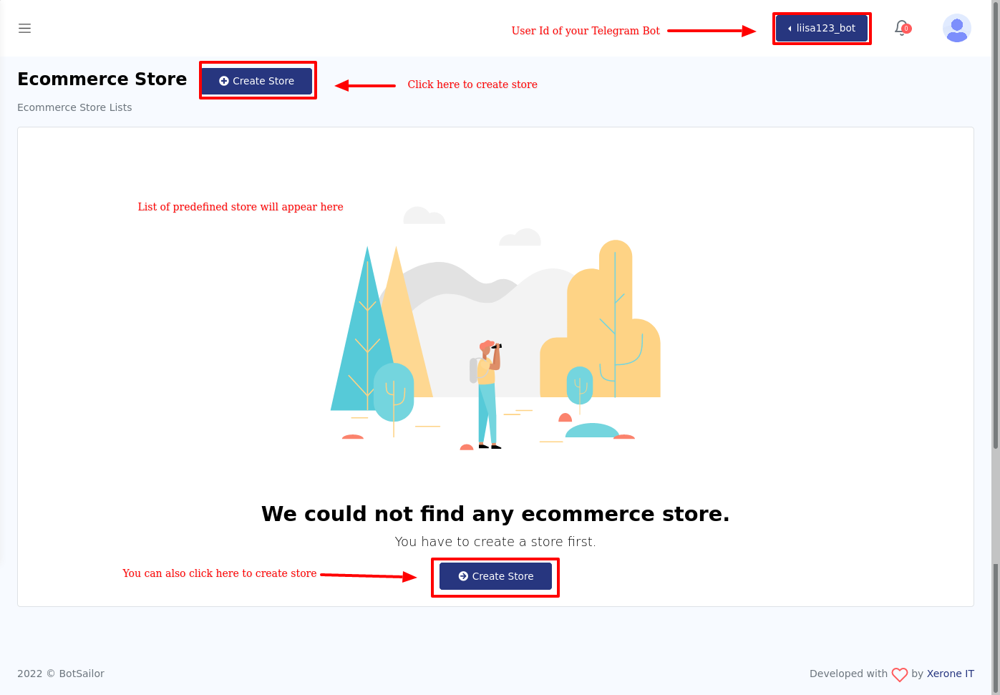
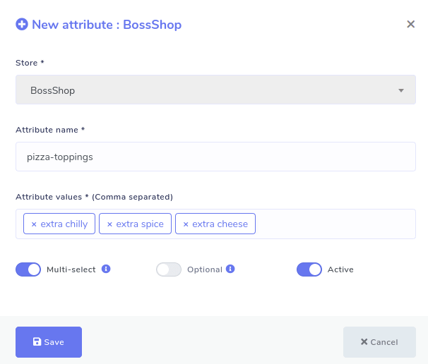
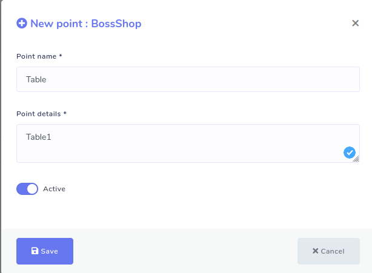
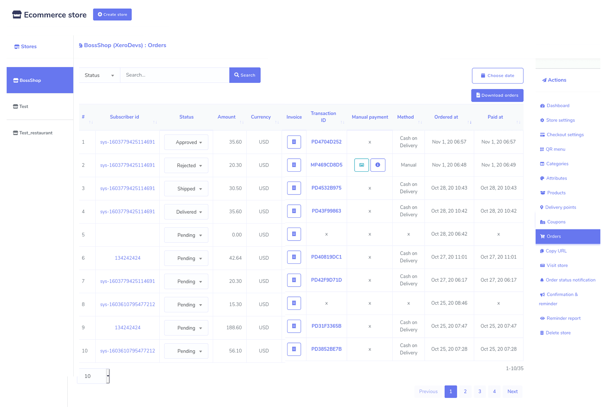
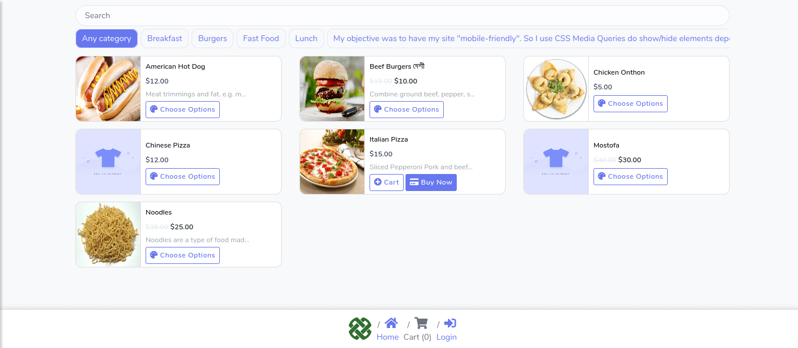
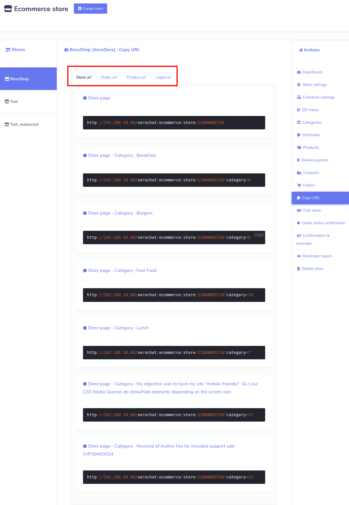
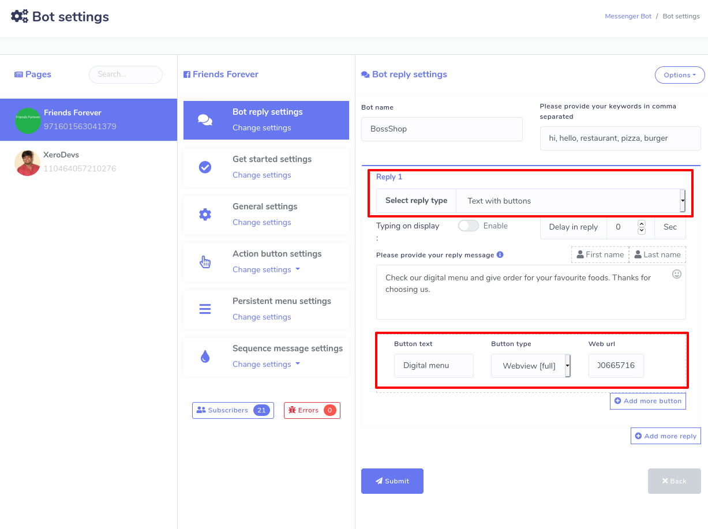

- Introduction
- Create new and edit existing store
- Generate virtual restaurant
- Add category
- Add Attribute
- Add products to the store
- Checkout settings
- Delivery points
- Coupon
- Orders
- Confirmation and Reminder
- QR menu
- Visit store
- Copy url
Introduction
The Ecommerce store is an eCommerce platform of BotSailor, a visual drag and drop Telegram bot builder platform. On the eCommerce platform, you can create an eCommerce store that could be available inside your Telegram Bot. if you integrate the eCommerce store built on BotSailor with your Telegram bot, they together can sell products to customers and take payment from them.
On the Bot Sailor visual drag and drop bot builder editor, there is a component called E-commerce. And with the component, you can easily integrate the eCommerce store with a Telegram Bot. After integrating the eCommerce store with your Telegram Bot, they together will sell products to customers and take payment from them.
Just after creating your eCommerce store, it will provide you with two QR codes— a Telegram Messenger QR code and a browser QR code. You just have to supply the QR codes to your customers. Just as your customers scan the Messenger QR code, straightway, your virtual shop opens inside your messenger. Likewise, just as they scan the browser QR code, your virtual shop will open on their browsers. Because of the QR codes, your customers will get rid of finding your Facebook page, sending messages, and entering your virtual restaurant’s link on their browsers.
Besides, the eCommerce store will provide two URLs under the QR codes--Telegram Messenger URL and browser URL. Just like QR codes, the Messenger URL will be opened inside the Telegram messenger, and the browser URL will be open on the browser.
Create Ecommerce Store
First, you have to create a store and add food items to the
store. Then you have to make some settings so that your
ecommerce store works properly.
To create a store, go to the
left panel of the BotSailor Dashboard > click on the
'Ecommerce store'
menu.
Just as you click on the Ecommerce store option at the leftsidebar of the BotSailor Dashboard a page called Ecommerce store will appear with a Create store button at the top of the page. At the right top side of the page, you will see the name of your user id of your Telegram bot. There is another Create store button at the bottom of the page. To create an eCommerce store, you can also click on the button.
Create new and edit existing store
Well, to create a new store, you have to click on the
Create store button
first. Instantly, a form will appear. You have to fill out the
form-- selecting a Facebook Page, providing some initial
information about the virtual restaurant, writing down the Terms
of service and refund policy, and uploading the logo and
favicon.
In the form, there is a special box called local that needs a
bit of explanation. Just as you click on the box, a drop-down
menu of some languages will appear-- you can select any
language. Your virtual restaurant will open in the language that
you select. For example, if you select English, your virtual
restaurant will appear to your customers in English.

There are two boxes called, ‘Facebook Pixel Id’ and ‘Google
Analytics Id’ that also need a bit of explanation.
Facebook Pixel Id is a piece of code you can place inside the
source code of your website. The code automatically can collect
and store data of your website visitors. Because of Facebook
Pixel code, you can run Facebook Ads for targeted audiences who
have visited your website before using the data. Please visit
the
link
to see how to create Facebook Pixel Id.
Google Analytics Id also works like Facebook Pixel Id to
re-target your website visitors in the Google ads. Please visit
the
link
to learn how to create Google Analytic Id.
Anyway, after filling out the form, click on the
Create store button at the
bottom of the form. If you fill up every compulsory field
properly, a pop-up box will appear with a successful message.
Add Category
Now you have to add some categories to your store so that you can add food items in different categories. The category is an important thing to arrange your food items. If your food items are organized properly, your clients can look over different food items and choose from them easily. To add a category, click on the option called ‘Categories’ in the ‘Action menu’ at the right side of the Dashboard. Instantly, a page will appear with the Add category button at the top-right of the page.

Click on Add Category > write down the category name > Click
on the ‘Save’ button.
Now click on the
Add Category button and
straightaway, a pop-up form will appear. You have to fill out
the form— writing down a Category name. Then click on the
Save button. Now this
category has been added to your store.

Of course, you can add as many categories as you want. And all your categories with edit and Delete buttons will be listed on ‘Categories’ page. By clicking on the edit edit and delete delete button, you can edit and delete the category. You can also see the status of the category-- whether a category is active or not.
Add Attribute
To add the attribute, click on
Attributes > Add Attribute > write down Attribute Name >
provide Attribute Value > Enable or Disable two radio buttons
as you see fit > Save.
Just as you click on the Attributes option in the Action menu at
the left side of the dashboard, a page called ‘Attributes’ will
appear with the ‘Add attribute’ button at the top-right of the
page.

Now click on the
Add attribute button
and a pop-up box will appear. In the box, you have to write down
the name of the attribute and give attribute values in
comma-separated. Then enable or disable three buttons called
‘Multi select’, ‘Optional’, and ‘Active’ as you see fit for the
attribute.
By the Active button,
you can make the attribute Active or Inactive. The
functionalities of the other two buttons are a bit complicated
to understand. If you enable the
Multi-select button,
your clients can select the multiple attribute values of the
same food item. If you add an attribute called ‘Pizza toppings’
and add three values like ‘Extra Chilly’, ‘Extra spice’ and
‘Extra cheese’ and turn on a multi-select button, your customers
can order a Pizza that has Extra Chilly, Extra spice, and Extra
cheese at the same time.
On the other hand, if you disable the
Multi-select button, a
client can only one attribute value for a specific food item.
For example, if you disable ‘Multi-select’ for an attribute
called ‘pizza toppings’ with three values called ‘Extra Chilly’,
‘Extra spice’, and ‘Extra cheese’ a client can only order a
pizza either with extra chilly, extra spice or extra cheese.

As for the multi-select button, you have to keep in mind that
you can’t enable the multi-select button for the attributes like
‘Size’ because a food item can’t be small, medium, and large at
the same time-- it is not logically possible. But you can enable
the multi-select button for the attributes like toppings because
toppings can have Extra Chilly, Extra Spice, and Extra Cheese at
the same time. Moreover, for attributes like pizza toppings
enabling the multi-select button is useful because then
customers can order a pizza that has extra Chilly, extra spice,
and extra cheese in the toppings at the same time.
On the other hand, if you turn on the
Optional button, your
clients can avoid selecting attributes for a specific food item.
Then the clients can order specific food items that have no
additional ingredients. For example, if you enable the
Optional button for
‘Pizza toppings’, a client can order a pizza with toppings that
has no extra ingredients.
But if you disable the ‘Optional’ button, the clients must
choose an attribute. Otherwise, he/she can’t order the food
item. Disabling the ‘Optional’ button is required for attributes
like size, for a client must select a value for size whether it
is small, medium or large. Otherwise, they can’t order a food
item.
Then comes the ‘Active’ button. If you turn on the active
button, the attribute will appear when you add a food item to
the store and otherwise not.
Like the Category option, after you have added one or more
attributes, the attributes will appear on the page. Of course,
you can add as many attributes as you want. Well, from the page,
you can edit and delete any attribute you want and can see the
status of the attributes.

Add products to the store
After you have added categories and attributes, you add food
items that could be included in categories and attached to the
attributes.
Click on the
Products > Add product > Fill up the form > click Save
button.
To add products, click on the ‘Products’ option in the ‘Action’
menu on the left side of the dashboard. Straightway, the
Products page will appear with the
Add product ‘Add
product’ button at the top-right position. Now click on the
button and a form will appear. You have to fill out the form to
add the product-- providing some initial information about the
products, selecting categories and attributes. Moreover, you
have to upload thumbnails and featured images of the products--
you can upload one more image of the products in the featured
image option. Filling-out the form, you have to click on the
Save button. Instantly,
your food item will be added to your virtual shop.

Likewise, you can add thousands of food items. And all the food items will be shown on the page. And you can edit, delete and clone the food items and see the product page of the product by the action button. Also, you can see the price and status of whether the product is active or inactive.

Checkout settings
Now you have to make a checkout setting for your eCommerce store
built on the Ecommerce platform of BotSailor. BotSailor’s
‘Ecommerce platform’ has integrated some online payment
methods-- PayPal, Stripe, Mollie, Razorpay, Paystack so that
your customers can pay via the payment methods easily. Besides,
it supports manual payment and cash on delivery systems.
Now you can make a specific checkout setting for a specific
store.
Action > Checkout settings
To make a checkout setting, click on the ‘Checkout settings’ in
the ‘Action’ menu at the left side of the store dashboard.
Instantly, appear a form that you have to fill up. First, you
have to provide your account information for any or some of the
online payment methods that you want to enable. Then you have to
write down the instruction for manual payment in the text area
called ‘Manual Payment Instruction’.
After that, you will get a checkout payment option. From here,
you can enable any online payment methods and manual checkout
for your store. And ‘Cash on Delivery’ is enabled by default.
After that, you will get the ‘Currency and Label’ option. Here,
you have to select the currency of online payment methods, the
currency through which the clients will give the payment. For
example, if you select USD(Dollar) for PayPal and Stripe, your
customers have to pay in Dollars via PayPal and Stripe. Then you
will see, in a row, three radio buttons called
Right alignment ,
Two decimal , and
Display comma. By
placing your mouse cursor on the tooltips, you can see the
functionality of these buttons. Then you have to put labels for
the ‘Buy Now’ button
and
Store Pickup
title.
Then came the Tax and Delivery charge option. Here, you have to
provide the amount of Tax in percentage and delivery charge.

Then comes the address preference area. At first, you see a
radio button called
Store Pickup. If you
enable the button, the clients can give food orders via your
virtual restaurant and receive food items sitting at the table
of your real restaurant. But if you disable the
Store Pickup button,
you have to give a delivery address where the food will be
delivered. Next to the
Store Pickup button,
you will see a button called
Delivery note . If you
enable the ‘Delivery note’, button, your clients will get a text
area where they can write a delivery note. In the delivery note,
they can tell you how they want the delivery. For example, he
can tell that they want the delivery person to wear a mask while
delivering the food.
Then come some radio buttons, by disabling and enabling them,
you can determine which piece of information your clients have
to provide while giving their delivery addresses. The importance
of the buttons is that most of the time, you don’t need the
country, state, city, and country zip, because you already know
the area of your clients. So you don’t need to bother your
valued customers to provide his country, state, city and country
zip you know beforehand. On the other hand, if you are uncertain
of your customers’ area, enable country, state, city, and
country zip so that they have to provide them.
After filling out the checkout setting form, click on the
Save button and your
checkout setting is set.
Delivery Points
Since you have enabled the store pickup option, you have to set the delivery points. To do this, you have to add point names and point details. As for a restaurant, delivery points would be table and point detail would be table number. To add a delivery point, click on the ‘Delivery points’ on the left side of the dashboard. Instantly, a page will appear with the Add point button at top-right position. Click on the button and a pop-up form will appear. Then you have to fill-out the form by providing point(Table) and point details (For example, Table 1).

Coupon
If you want to give discounts on some specific products, coupons
are required.
Well, to make coupons, click on the coupons option in the
‘Action’ menu at the left side of the Dashboard. And instantly,
appear a form you have to fill out to create a coupon. At the
products field, you have to specify the products the coupon will
be applicable.

In BotSailor's Ecommerce platform, you can make three types of
coupons, such as Percent, Fixed cart, and fixed products. Now
you have to select any of the three types of coupon code. Before
selecting, you have to understand the functionality of each type
of coupon.
Let's explain them:
Percent– Percent coupon type is applicable for selected products
only. For example, if the cart contains three (3) t-shirts @ $20
each = $60, a coupon for 10% off applies a discount of $6.
Fixed cart –A fixed total discount for the entire cart. For
example, if the cart contains three (3) t-shirts @ $20 each =
$60, a coupon for $10 off gives a discount of $10. This coupon
type will be applicable for all the products you have added to
cart whether you have selected the products or not.
Fixed product – A fixed total discount for selected products
only. Customers receive a set amount of discount per item. For
example, three (3) t-shirts @ $20 each with a coupon for $10 off
applies a discount of $30.
Then you have to fill out the following boxes:
Coupon Code- Now give code for the coupon. Your customers will
use the code to get discounts on the products the coupon is
applicable to.
Coupon amount- Then you have to provide the amount for the
coupon. Depending on the discount type you choose, the coupon
amount will be a Fixed value or percentage. Enter the amount
without a currency unit or a percent sign, which will be added
automatically based on the discount type you choose e.g., Enter
’10’ for £10 or 10%.
Coupon expiry date– Date the coupon should expire and can no
longer be used.
Max usage limit- You have to specify the number of times the
coupon could be used before reaching the expiration date.
Coupon deactivate- By disabling the
status button, you
deactivate the coupon anytime.
Free shipping – If you enable Free shipping, the shipping cost
will be removed when the coupon is used.
Orders
You can see the details of the orders given by your clients on a page called Orders. Most importantly, using a thermal printer, you can print the invoices for the orders easily. To see the details of orders and print the invoices, click ‘Orders’, in the ‘Action Menu’ at the left side of the dashboard. Without delay, all the orders listed will appear on the page. Move the bottom scroll bar to see the whole details of the orders. From the page, you can change the status of the orders. Click on the ‘Status’ field beside the specific order and a drop-down menu with ‘Pending’, ‘Approved’, ‘Rejected’, ‘Shipped’, ‘Delivered’, and ‘Completed’ will appear. Now you can select one of them to see the status of the order later.

To print the invoice, click on the invoice field. Instantly, the order invoice will appear ready to be printed. At the top of the page, you will see three options — Large A4, Thermal 88mm, Thermal 57mm. Click on one of them and the print option will appear. After the invoice printed, give the copy to your cook. By clicking on the button called Choose date, you can see only the orders given at a specific time such as the last month. Also, you can download the list of orders in a CSV file by clicking on the Download orders button.
Confirmation and Reminder
If you make a setting, Confirmation and Reminder can send
abandoned cart recovery reminders to the clients if they leave
your virtual restaurant after adding food items to the cart. It
is a very important feature because it can recover lost sales by
bringing back the potential customers to your virtual
restaurant. As well, the feature can send confirmation messages
just as they finish purchasing so that the customers could be
confirmed about their purchase.
To make a setting, click on the ‘Confirmation and Reminder’
option in the left menu. Instantly, appear a form you have to
fill-out. At the top, you will see three options-- Messenger,
Sms, and Email. Select Messenger to send Confirmation message
and Abandoned Cart Recovery Reminder via Messenger and select
Sms and Email respectively.
Well, if you want to set the confirmation message for messenger,
first, select messenger at the top of the form, and next, select
‘checkout messenger’ at the bottom-right of the form. After
that, you have to write the content in the ‘messenger content’
box. And the
My Order button, the
order page link embedded, will be automatically added to the
confirmation message. That is, your clients will get the message
along with the ‘My Order’ button. And clicking on the button,
the client can see the order history. Of course, you can change
the label of my order button.

Likewise, you can set confirmation messages for Sms and
Email.
On the other hand, BotSailor's Ecommerce platform can send three
abandoned cart reminders successively within one hour to 24
hours. And you can set each abandoned cart reminder differently.
Like confirmation messages, to set abandoned cart reminders for
messenger, first, select messenger at the top then select any of
the messenger reminders. Then click under it and a drop-down
menu will appear. From the drop-down menu, you can select the
hour (from 1 hour to 24 hours) you want to send the reminder at.
Of course, you can stop the reminder by selecting the ‘do not
send’ option from the drop-down menu.
You can edit or rewrite the content in the ‘Messenger content’
box.
The product link is embedded in a button called the
View Details , the
product link embedded and the ‘Checkout’ button with the
checkout page embedded would automatically be added to the
reminder. Of course, you can change the labels of the two
buttons. By clicking on the
View Details button,
the client can see all the items added to the cart. As well, by
clicking on the
Checkout button’, the
clients directly enter the checkout page. You can also insert a
coupon code, while editing the content, in the message box to
give discounts on the products.
If a client leaves your virtual restaurant and returns and
finishes purchasing before an abandoned cart recovery is sent,
the abandoned cart recovery reminder will be stopped
automatically, and instead, a confirmation message will be sent.
Likewise, getting an abandoned cart recovery reminder, if a
client returns to your virtual restaurant and finishes
purchasing, other recovery reminders in a queue will be stopped,
and instead, a confirmation message will be sent.
Reminder Report:
You can see the Abandoned Cart Reminder report by clicking on
the
Reminder report
at the left panel of the Dashboard.

Confirmation and Reminder
Once you have finished creating your virtual restaurant, you
need the QR codes to provide them to your clients-- scanning the
QR codes, your clients can easily enter your restaurant not only
via Facebook Messenger but also on the browsers.
To get the QR codes, click on the QR menu and straightway, the
‘QR menu’ page will appear. On the page, you will see two QR
codes-- one for messenger and the other for browsers. Clicking
on the Download button,
you can easily download the QR codes.

Now print the QR code and attach it to any suitable place, for
example, on the wall, and on the table so that your clients can
easily notice and scan the QR code to enter your virtual store,
meaning to get the virtual menu. Once the QR code is scanned,
the virtual menu will appear on your mobile screen inside
messenger or on browsers. From the virtual menu, your clients
can choose foods and give orders while sitting at the table of
your restaurant without talking to your waiter.
In the COVID-19 pandemic, the QR code menu becomes essential
because by using it, people needn’t come in direct contact with
any person while eating out.
Under the messenger QR code, you can write a welcome message for
your clients. After writing the message, click on the
Save button. Then your
QR code will hold the message you have written.
Visit store
To check how your virtual restaurant is set, click on the ‘Visit store’ option in the ‘Action Menu’ and you will redirect to your virtual restaurant in a new tab.

Copy url
Once you finish creating your virtual restaurant, the ‘Ecommerce
store’ has made different urls— Store url, Order url, Product
url, and Legal url-- for your virtual restaurant.
You need the urls if you want to integrate your virtual
restaurant directly to Facebook page messenger. And if so, your
clients have to send messages to the Facebook page to get access
to your virtual shop.
To get the urls, click on the ‘Copy url’ option in the ‘Action
menu’ at the left panel of the dashboard. Instantly, the copy
url page will appear with four types of urls. You need the two
types of url—Store url and Products urls-- to integrate the
restaurant to the Facebook page.

Now copy the store url and product urls and go to the messenger
bot of the xeroChat.
Click on the Messenger bot > bot settings > action> add bot
reply> fill out the bot reply settings form.
At the top of the messenger bot feature, you will see ‘bot
settings’. Click on the
action button,
instantly a page called ‘bot settings’ will appear. Click on
Add bot reply at the
top-right position of the page and appear a form you have to
fill up to integrate your virtual restaurant with Messenger
bot.
At first, you have to provide a bot name and keywords in
comma-separated. Based on the keywords, the bot will reply. Now,
you have to select the reply type. To integrate your shop with
Messenger, you have to provide urls copied from your virtual
restaurant. Therefore, you have to select any of the reply types
that come with button types that support urls. Anyway, select
text with button’ reply
type and any of the
web url and webview
buttons. Select the web view full and a box called web url will
appear— past the url here. If you provide a store url, the
entire shop will appear inside the Facebook messenger, whereas
for the product url, the specific product will appear. Clicking
‘Add more button’ and ‘Add more reply’ button, you can add more
buttons and replies.

Moreover, by the postback button, you can provide products in categories. Eventually, click on the Submit button to save the bot settings for your virtual restaurant. Now the Messenger bot will handle your virtual restaurant inside the messenger. That is, your clients can enter your virtual restaurant by sending messages.